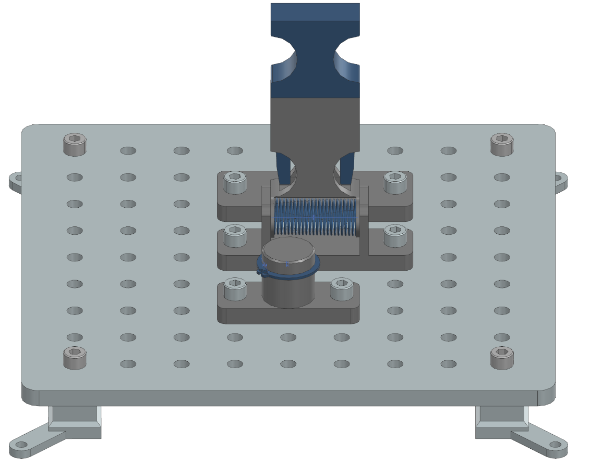
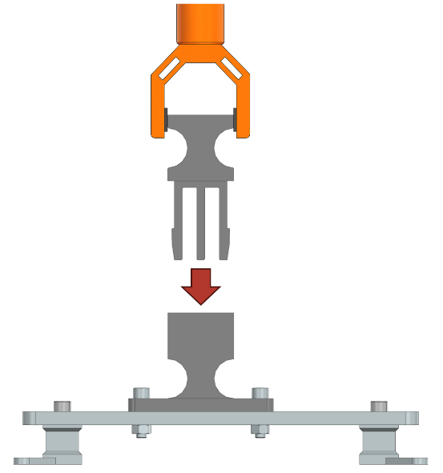
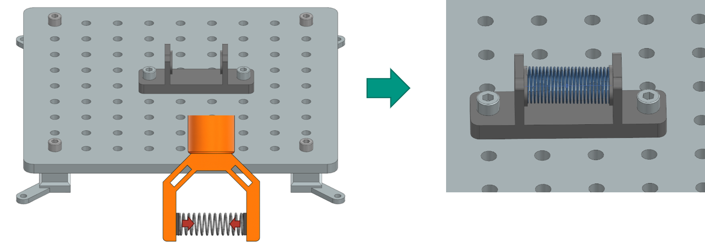

Robotic Task Descriptions: Elastic Deformation
This section describes tasks that involve elastic deformation of components, requiring the robot to handle and manipulate parts that must be compressed or expanded during assembly. In contrast to limp objects such as cables or hoses, these tasks involve components that snap back to their original shape after deformation, such as snap hooks, springs, and circlips. A task board with all three tasks completed successfully is shown below.
{kind=link}
Task 1: Snap Hook
Description:
A snap hook must be mounted into a designated assembly component on the task board. The snap hook is designed to elastically deform during insertion, requiring it to be pushed into place so that its hooks compress and then expand to lock into the assembly. The task challenges the robot to handle components that require elastic deformation, which introduces compliance and force control considerations.
The main difficulty lies in the need to apply enough force to deform the snap hook without damaging it, and to ensure that the hook is fully seated and locked in place. The robot must also recognize when the snap hook is properly retained, as the component cannot be removed without compressing the hooks again.
{kind=link}
Test Objective:
This task evaluates the robot’s ability to manipulate and assemble components that require elastic deformation, and to verify secure placement.
Success Criteria:
The snap hook is securely mounted inside the assembly component.
The hook cannot be removed without compressing the hooks.
The snap hook is fully seated and locked in place.
Task 2: Spring
Description:
A spring must be compressed and inserted into two circular holders on the assembly component. The relaxed length of the spring is longer than the available space, so the spring must be compressed during placement. This task introduces the challenge of manipulating compliant objects that resist deformation and may slip or move unpredictably when compressed.
The difficulty for the robot is to maintain control of the spring while compressing it and to position it accurately within the holders. The robot must also ensure that the spring remains in place after release, as improper placement can cause the spring to pop out or not be fully seated.
{kind=link}
Test Objective:
This task assesses the robot’s ability to handle and assemble compliant, deformable objects that require forceful manipulation and precise placement.
Success Criteria:
The spring is fully positioned within the two circular holders.
The spring remains in place after release.
The spring is not protruding or misaligned.
Task 3: Circlip Assembly
Description:
A circlip, also known as a retaining ring or snap ring, is a type of fastener that fits into a machined groove on a shaft or inside a bore to secure components in place. Circlips are typically made of spring steel and are designed to be elastically deformed during installation or removal. They provide a removable shoulder that prevents lateral movement of parts, such as bearings or gears, along a shaft.
In this task, a circlip must be expanded and placed into a retaining ring groove on a shaft of the assembly component. The circlip is a flexible ring that must be elastically deformed (expanded) to fit over the shaft, then released so it contracts into the groove. This task highlights the challenge of manipulating small, flexible parts that require precise deformation and alignment.
The main difficulty is expanding the circlip enough to clear the shaft without overstretching or dropping it, and then aligning it accurately with the groove before releasing. The robot must also verify that the circlip is fully seated in the groove, as improper placement can result in incomplete assembly.
Test Objective:
This task evaluates the robot’s ability to manipulate and assemble small, flexible components that require controlled deformation and precise placement.
Success Criteria:
The circlip is correctly placed inside the groove of the assembly component.
The circlip is fully seated and retained in the groove.
The circlip does not fall off or sit above the groove after placement.
Task 3.1: Circlip Removal
Description:
This task is a variation of Task 3, where the robot must remove a circlip from a retaining ring groove on a shaft of the assembly component. The circlip is already installed, and the robot must expand it to clear the shaft and then remove it without damaging the circlip or the assembly component. Difficulties lie not only in controlling the expansion of the circlip but also even just grasping the holes of the circlip without slipping.
Test Objective:
This task assesses the robot’s ability to handle and manipulate small, flexible components that require controlled deformation for removal.
Success Criteria:
The circlip is successfully removed from the groove without damage.
The circlip is placed in a designated area after removal.